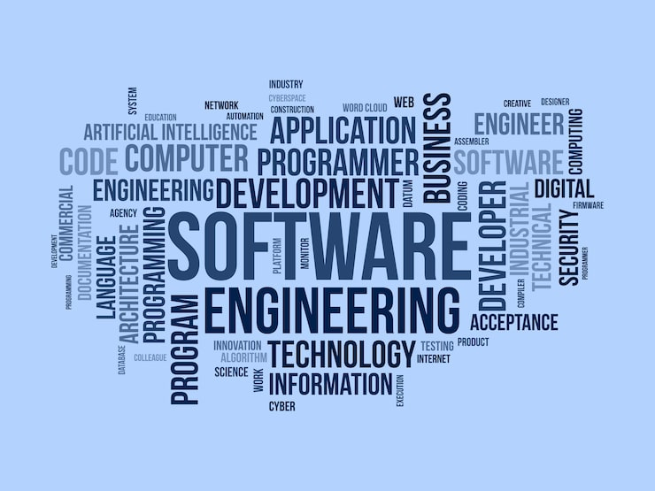
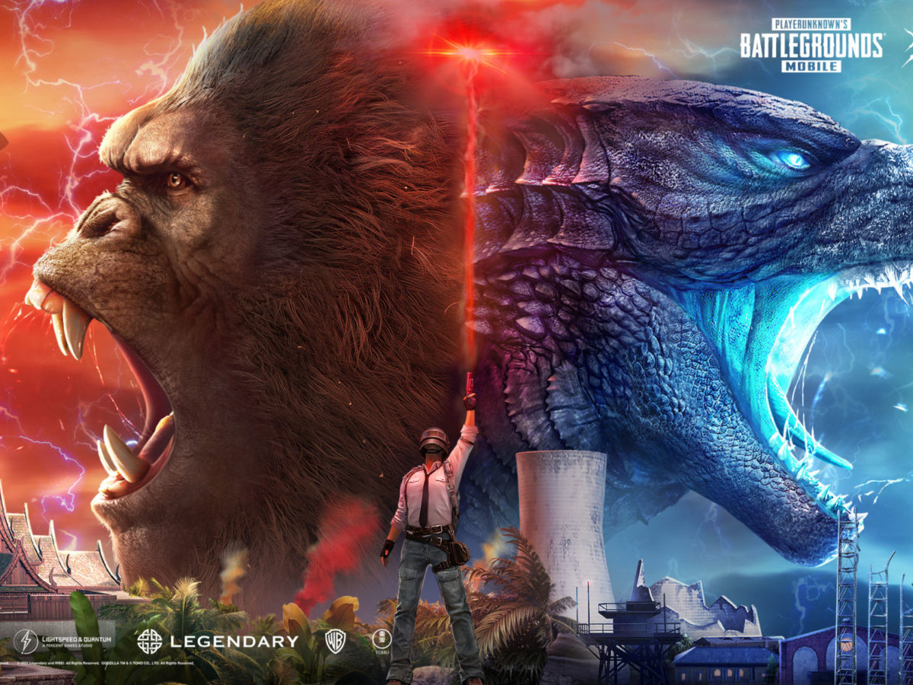

1.About Me
Hello! Welcome to my student portfolio. I am a hardworking and curious student who is learning web development.Right now, I am learning HTML, CSS, and JavaScript. I enjoy creating simple websites and trying new ideas in coding.Every day I practice to improve my skills and understand programming better.My goal is to become a successful web developer in the future and build useful and creative websites for people.
2.My Skills
Gaming is one of my strongest skills, especially in games like BGMI and Free Fire Max.I have developed excellent reflexes, quick thinking, and strong concentration through regular practice.I understand different game strategies, team roles, and map positioning, which help me perform well in intense situations.I can lead my team when needed, give clear instructions, and support my teammates during matches.Gaming has also improved my patience, problem-solving ability, and decision-making under pressure.I always try to learn new techniques, improve my gameplay, and stay updated with new game updates and strategies.

3.Career Goal
My career goal is to become a successful and skilled software engineer. I have a strong interest in computers and technology, and I am very curious about how software and applications are created. I want to learn different programming languages such as Java, Python, and JavaScript, and understand how to build websites, mobile apps, and software systems. I enjoy solving problems and finding logical solutions through coding. In the future, I want to work in a good technology company where I can improve my knowledge and gain real-world experience. I also want to create useful applications that can help people in their daily lives and make tasks easier. I believe that hard work, regular practice, and continuous learning will help me achieve my dream. I am ready to face challenges, learn new technologies, and grow step by step to become a professional software engineer.
4.Hobbies
My hobby is gaming, especially playing BGMI. I enjoy playing this game in my free time because it helps me relax and refresh my mind. Gaming improves my focus, quick thinking, and decision-making skills. While playing BGMI, I learn teamwork, strategy planning, and how to stay calm under pressure. It is not just a game for me, but also a way to improve my concentration and problem-solving abilities. I always try to improve my performance and learn new strategies to become a better player
5.Education
I am currently studying in Class 9. My favorite subjects are Science and Mathematics because they help me understand how things work in the real world. In Science, I enjoy learning about technology, electricity, motion, and the human body. It increases my curiosity and helps me think logically. Mathematics is my other favorite subject because I like solving problems, equations, and numerical questions. It improves my thinking ability and helps me develop strong problem-solving skills. I believe that both Science and Mathematics are very important subjects for my future career, especially because I want to become a software engineer. These subjects build my logical thinking, analytical skills, and confidence in solving complex problems
• Name - Affan ali
• Class - IX
• Roll no. - 04
• School - Pride International School